Einleitung
Diese Dokumentation beschreibt das Nutzen der Cloudsoftware Nextcloud und ist in zwei Teile unterteilt. Der erste Teil beschäftigt sich mit der Weboberfläche, welche unter https://nx15150.your-storageshare.de mit einem Webbrowser aufrufen lässt. Der zweite Teil beschäftigt sich mit der Integration von Nextcloud in dein Desktop/Smartphone. Dieser Teil ist vor allem für Vielnutzer.innen interessant, welche mit ihren gewohnten Tools (Outlook etc.) arbeiten möchten. Für alle anderen reicht das Webinterface meist aus.
Nextcloud mit Android verbinden
Dieses Kapitel befasst sich mit der Integration von Android Smartphones und Tablets mit Nextcloud. Folgende Themen werden abgedeckt:
Da gewisse Applikationen, welche verwendet werden, auf den kommerziellen Plattformen kostenpflichtig sind, wird für interessierte Personen auch die Installation des alternativen Stores F-Droid vorgestellt.
Dateien
Wer die Dateien auf sein Smartphone synchronisieren möchte, muss zunächst die Nextcloud App aus dem Playstore laden.
Sobald die Applikation installiert ist, öffne diese und tippe auf »anmelden«.
Nun muss die URL der Cloud (in unserem Falle https://nx15150.your-storageshare.de) eingegeben und die Eingabe mit einem Klick auf den Pfeil (2) bestätigt werden.
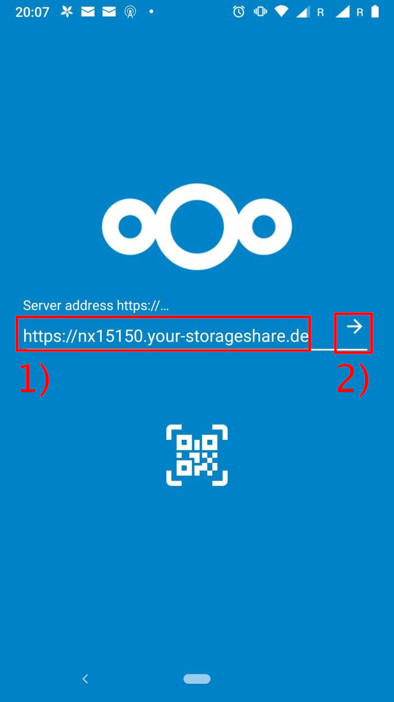
Es wird nun die Anmeldeseite der Cloud geladen. Fahre mit einem tippen auf »Anmelden« fort.
Nun den persönlichen Nutzername und das zugehörige Passwort eingeben. Danach die Eingabe mit einem Tippen auf »Anmelden« bestätigen.
Das Einrichten ist nun abgeschlossen und die App kann verwendet werden.
Kontakte und Kalender synchronisieren
Um Kalender und Kontakte synchronisieren zu können, muss die Applikation DAVx5 vom Google Playstore heruntergeladen und installiert werden. Die Entwickler.innen haben sich entschieden, in kommerziellen Marktplätzen Geld für die App zu verlangen. Personen, welche sich das nicht leisten können/wollen, haben die Möglichkeit, DAVx5 kostenlos über den freien Store F-Droid zu beziehen. Weitere Informationen über die Benutzung von F-Droid finden sich im entsprechenden Abschnitt dieser Dokumentation.
Öffne die App und klicke dich durch die Begrüßung mit Klicks auf den Pfeil-Button.
Bestätige den Hinweis mit einem Klick auf den Button.
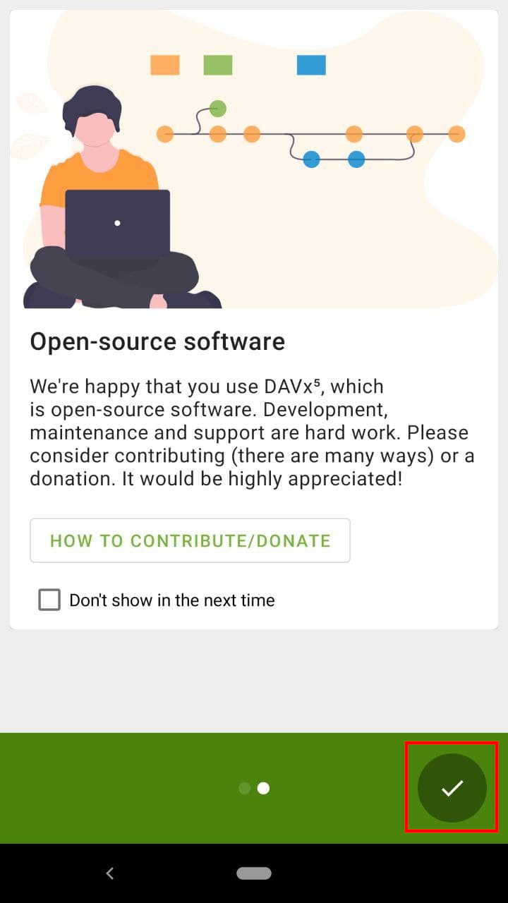
Klicke auf den Plus-Button, um mit dem Hinzufügen eines neuen Accounts zu beginnen.

Wähle nun die Loginoption URL + Benutzername aus.
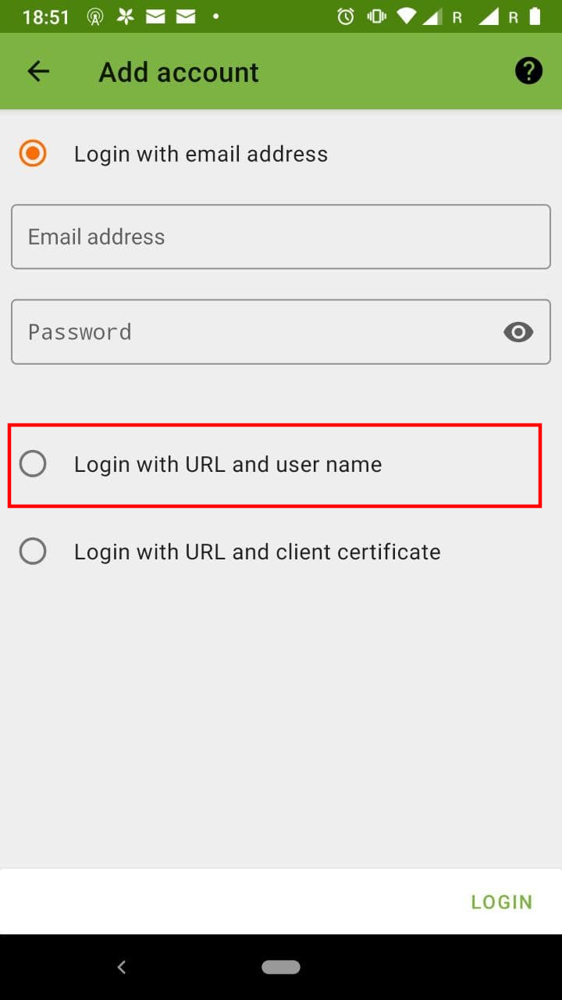
Nun können die relevanten Daten eingetragen werden. Trage zunächst (1) die URL der Cloud (in diesem Falle https://nx15150.your-storageshare.de), danach (2) deinen Benutzername und abschließend (3) dein Passwort ein. Danach kannst du mit einem Tippen auf »Anmelden« den Prozess starten.

War die Anmeldung erfolgreich, ist folgende Ansicht zu sehen. Es empfiehlt sich, die vorgeschlagenen Einstellungen zu übernehmen und mit einem Tippen auf »Konto anlegen« die Anmeldung abzuschließen.
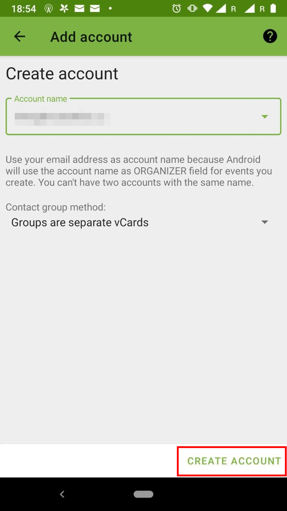
Im Anschluss daran öffnet sich die Hauptansicht der App. Um die Kalender und Kontaktbücher zu verwalten, klicke auf den neu angelegten Account.

Zunächst muss der Applikation Berechtigungen zugeteilt werden. Hierfür auf »Berechtigungen« tippen.

Nun alle Berechtigungen zulassen, indem auf die Schaltfläche neben »Alles Darunter« aktiviert wird. Es werden nun zwei Dialoge aufgehen, in welchen die Berechtigung für die Kontakte als auch die Kalender bestätigt werden müssen.

Wurde allen Dialogen zugestimmt, so sind alle drei Schalter nun aktiviert. Kehre mit einem Klicken auf den Zurückpfeil wieder zu den Kontaktbücher zurück.

In dieser Ansicht (»Carddav«) können die Kontaktbücher ausgewählt werden, welche mit dem Smartphone synchronisiert werden sollen. Danach auf den Reiter »Caldav« tippen (2), um die Kalender auszuwählen.
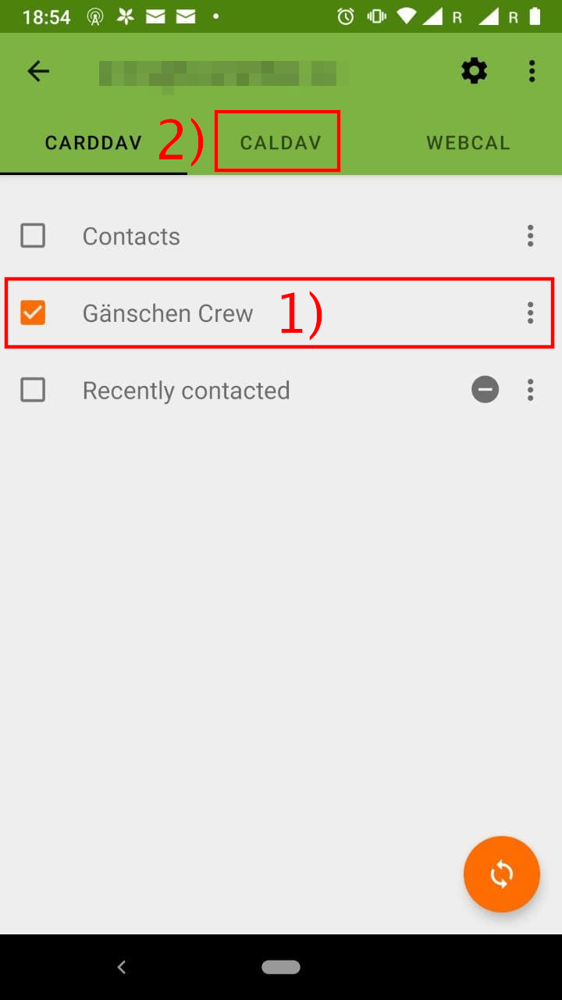
In der Kalenderansicht die gewünschten Kalender auswählen. Danach sollte eine initiale Synchronisation mit dem Sync-Button (2) gestartet werden.
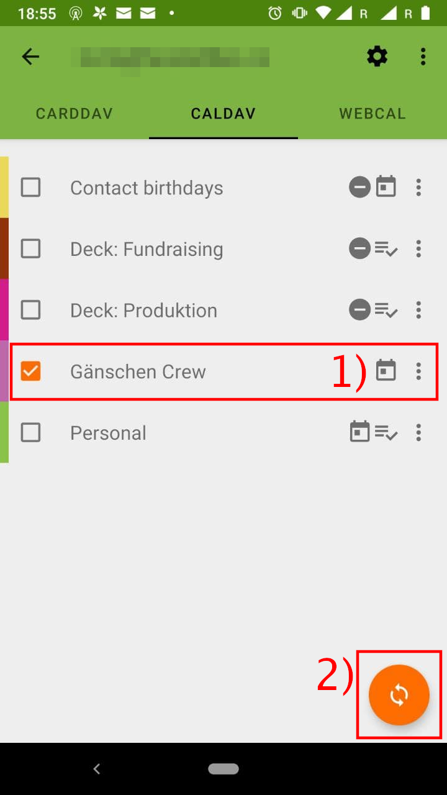
Die Kalender und Kontaktbücher sind nun auf deinem Smartphone eingerichtet und können in den entsprechenden Apps (Kalender, Kontakte) verwendet werden. Die Synchronisation geschieht hierbei automatisch.
Aufgaben
Die Aufgabenlisten (ToDo-Listen, Tasks) von Nextcloud sind an die jeweiligen Kalender geknüpft. In anderen Worten: Sobald ein Kalender mit dem Smartphone synchronisiert ist (siehe Abschnitt Kalender und Kontakte), sind auch die entsprechenden Aufgabenlisten auf deinem System für ToDo-Apps verfügbar. Personen, welche noch nicht über solch eine App verfügen, sei Tasks.org empfohlen. Diese unterstützt auch Dinge wie Sub-Tasks usw. Die folgende Anleitung zeigt, wie die Berechtigungen korrekt gesetzt werden können.
Die Einstellung muss in der DAVx5 App vorgenommen werden (also nicht in Tasks). Öffne also die App und klappe das Menü mit einem Klick auf die drei Striche oben links aus.

Öffne die Einstellungen mit einem Tippen darauf.
Scrolle runter, bis du die Schaltfläche »App-Berechtigungen« siehst. Wenn dies der Fall ist, tippe darauf.

Nun den Schieberegler neben »Tasks-Berechtigungen« aktivieren.

Deck
Für die Inhalte der Deck Applikation können existiert eine eigene App für die Android Plattform. Neben einer auf Smartphones angepassten Übersicht, werden dir auch Notifications über deine Tasks geschickt. Die Entwickler.innen haben sich entschieden, in kommerziellen Marktplätzen Geld für die App zu verlangen. Personen, welche sich das nicht leisten können/wollen, haben die Möglichkeit, die Deck App kostenlos über den freien Store F-Droid zu beziehen. Weitere Informationen über die Benutzung von F-Droid finden sich im entsprechenden Abschnitt dieser Dokumentation.
Die Konfiguration der Deck Applikation ist am einfachsten, wenn du bereits die normale Nextcloud App heruntergeladen und konfiguriert hast. Weitere Informationen hierzu findest du im entsprechenden Abschnitt dieser Dokumentation.
Lade dir als erster Schritt die App aus dem Play Store oder F-Droid herunter und öffne sie.
Tippe dann auf den Button »Choose Account«/»Account wählen«.
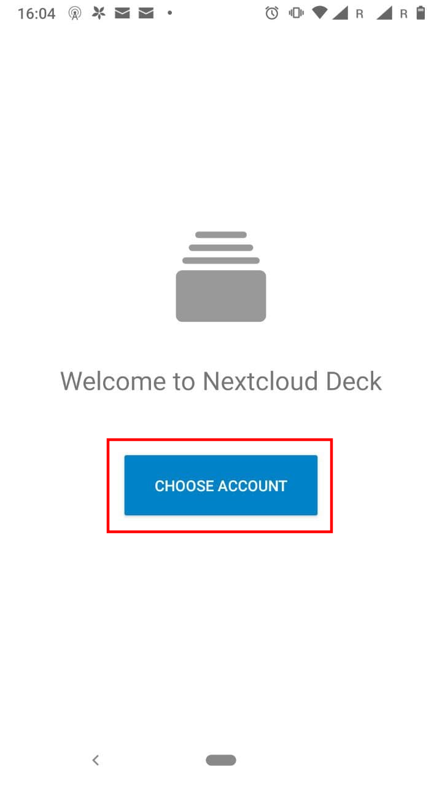
Dir wird nun eine Liste aller Accounts präsentiert, welche in der Nextcloud App konfiguriert sind. Wähle den gewünschten Account aus (1) und bestätige deine Wahl mit »Ok« (2).
Erlaube den Zugriff auf deinen Nextcloud Account mit einem Tippen auf »Allow«/»Zulassen«.
Die Deck App ist nun konfiguriert und kann genutzt werden.

F-Droid
Warnung: Die Verwendung externer Paketquellen kann die Sicherheit deines Android Systems beeinträchtigen. F-Droid ermöglicht es, unabhängig von Google, Apps auf deinem Smartphone zu installieren. Zum einen erhöht dies die Freiheit der Nutzenden, zum anderen verlangt es von diesen auch ein erhöhtes Sicherheitsbewusstsein. Aus diesem Grund sei dieser Schritt nur Benutzer.innen empfohlen, welche sich in der Lage sehen, die Risiken zu verstehen und abwägen zu können.
Die Urheber dieser Dokumentation übernehmen KEINE Verantwortung für Folgen, welche aus den Folgen dieser Anleitung noch dem Benutzen von F-Droid entstehen können.
F-Droid ist ein alternativer App-Store für Android und ermöglicht es, unabhängig von kommerziellen Stores sein Gerät mit Apps und Updates zu versorgen.
Zunächst muss die Applikation aus dem Internet herunter geladen werden. Hierfür kann der vorherige Link oder dieser QR-Code verwendet werden.

Sobald der Download der Applikation begonnen hat, bestätige, dass du die Datei auf deinem System behalten willst mit einem Tippen auf »Ok«.
Wen der Download abgeschlossen ist öffne die Datei mit einem Klick auf »Öffnen«.
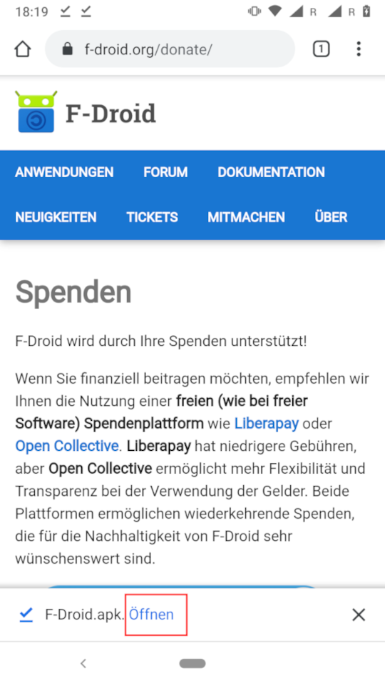
Wenn du nicht bereits andere Applikationen über deinen Browser installiert hast, wird dir der folgende Dialog präsentiert. Klicke auf »Einstellungen«.

Aktiviere nun die Schaltfläche »Dieser Quelle vertrauen«.
Kehre nun mit einem Klick auf den Pfeil oben links zurück.

Dir sollte nun der folgende Dialog präsentiert werden. Ist dies nicht der Fall, so suche die F-Droid Datei in deinen Downloads und öffne sie erneut.
Klicke auf »Installieren«.

Sobald die Installation abgeschlossen ist, wirst du darüber informiert. Tippe auf »Öffnen« um F-Droid zu starten.
Du kannst nun Applikationen aus dem unabhängigen F-Droid Store herunterladen.
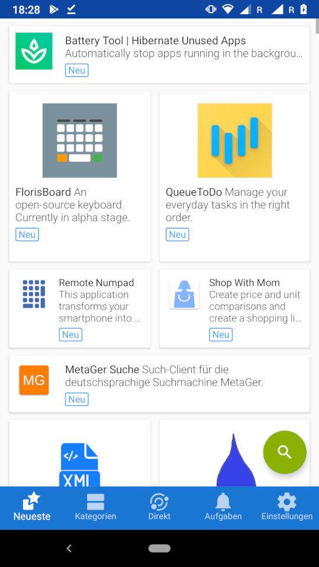
Nextcloud mit Mac verbinden
Dieses Kapitel befasst sich mit der Integration von macOS. Es werden folgende Themen abgedeckt (mehr kommen, sobald ich wieder Zugang zu einem Mac habe):
Dateien
Das Vorgehen bei der Konfiguration des Dateinsynchronsiation ist mit dem von Windows vergleichbar. Bis dieser Teil der Dokumentation fertiggestellt ist, verwende einfach die Anleitung für Windows. Vergiss einfach nicht, die Mac und nicht die Windows Variante zu downloaden.
Mac Kalender einrichten
Die Kalender Applikation von macOS kann mit Nextcloud verbunden werden.
Öffne hierzu zunächst die Kalenderapp auf deinem Mac. Danach klicke in der Menüleiste auf »Kalender« (1) und danach auf »Accounts...« (2).
Dies öffnet die Accounteinstellungen des Kalenders. Wenn du bereits über Accounts verfügst (der Dialog also nicht so wie unten aussieht) klicke zunächst auf das Plus links unten (1). Danach klicke auf »Anderen Account hinzufügen« (2). Wenn du noch über keinen Account verfügst, kannst du den ersten Schritt überspringen und gleich auf »Anderen Account hinzufügen« klicken.

Wähle als Typ »CalDAV-Account« aus.

Im nächsten Dialog müssen die korrekten Einstellungen gesetzt werden. Wähle zunächst (1) als Accounttyp Erweitert aus. Danach kannst du die Einstellungen (2) wie folgt setzten:
| Einstellung | Was | Beispiel |
|---|---|---|
| Benutzername | Dein Loginname für Nextcloud. | max |
| Passwort | Das Passwort, welches du für Nextcloud verwendest. | |
| Serveradresse | Die URL der Nextcloud ohne den https:// Teil. | nx15150.your-storageshare.de |
| Serverpfad | remote.php/dav/principals/users/BENUTZER/ wobei BENUTZER durch dein Loginname ersetzt werden muss. | remote.php/dav/principals/users/max/ |
| Port | 433 | 433 |
| SSL Verwenden | Aktivieren (Hacken muss gesetzt sein). | |
| Kerbos v5 zur... | Deaktiviert (Hacken nicht gesetzt) |
Die Beispielswerte gelten für den User mit dem Namen max auf der Nextcloud mit der URL https://nx15150.your-storageshare.de.
Die Eingabe mit einem Klick auf »Anmelden« abschließen.

Erlaube den Zugriff mit einem Klick auf »Immer erlauben«.

Die neue Kalenderverbindung befindet sich nun bei deinen Kalenderaccounts. Wenn du die Aufgabenlisten (ToDo's) in die Erinnerungen App integrieren möchtest, aktiviere das entsprechend.

Du kannst nun auf alle Kalender von der Nextcloud zugreifen. Es kann sein, dass du diese zunächst nicht siehst. Um dies zu ändern, Klicke in der Hauptansicht von Kalender auf »Kalender« und aktiviere die gewünschten Kalender.
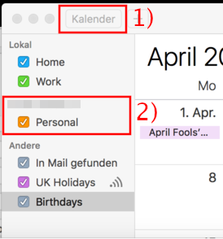
Mac Kontakte einrichten
Auch die Kontaktbücher von Nextcloud können mit der entsprechenden Mac Applikation synchronisiert werden. Ich liefere die Anleitung nach, sobald ich wieder über einen Mac verfüge. Das Vorgehen entspricht aber weitestgehend dem des Kalenders.
Nextcloud mit Windows verbinden
Dieses Kapitel befasst sich mit der Integration von Windows. Folgende Themen werden abgedeckt:
Dateien
Diese Anleitung hilft dir, die Daten von Nextcloud mit deinem Windowssystem zu synchronisieren.
Installation Client
Zunächst muss der Client heruntergeladen werden. Gehe hierfür auf https://nextcloud.com/install/#install-clients und klicke auf »Windows« um den Installer herunterzuladen.

Wenn der Download abgeschlossen ist, öffne die heruntergeladene Datei mit einem Klick auf die Datei.
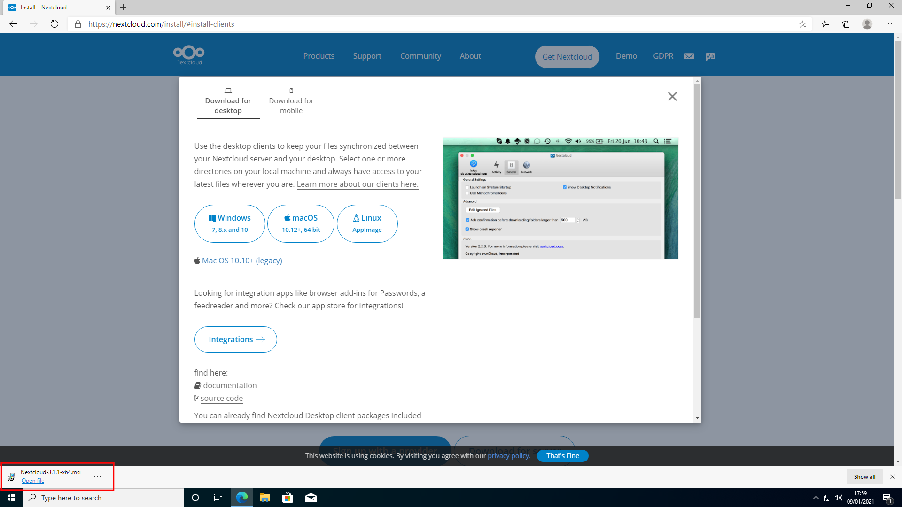
Der Installer öffnet sich. Klicke auf »Next« um die Installation zu starten.
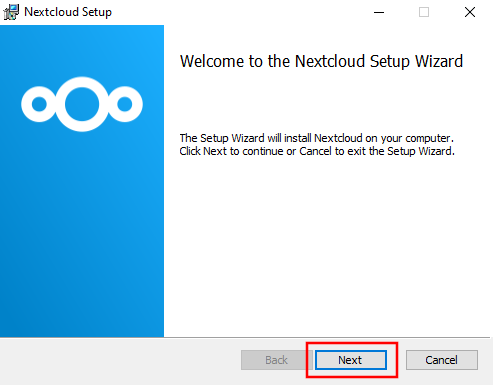
Klicke auf »Next«.

Starte die Installation mit einem Klick auf »Install«.

Erlaube das Durchführen der Installation mit einem Klick auf »Ja«.
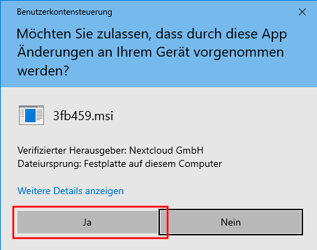
Warte bis die Installation abgeschlossen ist und schliesse den Installer mit einem Klick »Finish«.

Account hinzufügen
Starte das Nextcloud Programm auf deinem Computer. Der unten dargestellte Dialog wird sich öffnen. Klicke auf den oberen linken Bereich der Titelleiste (innerhalb des rot markierten Bereichs).

Klicke auf »Konto hinzufügen«.
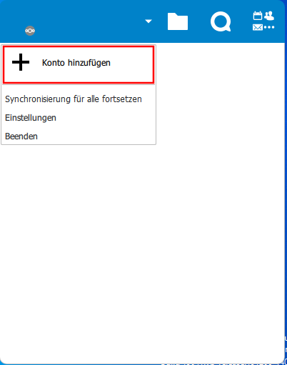
Ein Assistent öffnet sich. Klicke auf »Bei Nextcloud anmelden«. (Hinweis: Sollte sich nicht der nächste Dialog öffnen, sondern eine Website, gehe zurück und betätige den »Bei Nextcloud anmelden« erneut.)

Nun muss die URL der Cloud (in unserem Falle https://nx15150.your-storageshare.de) eingegeben und die Eingabe mit einem Klick auf »Weiter« (2) bestätigt werden.
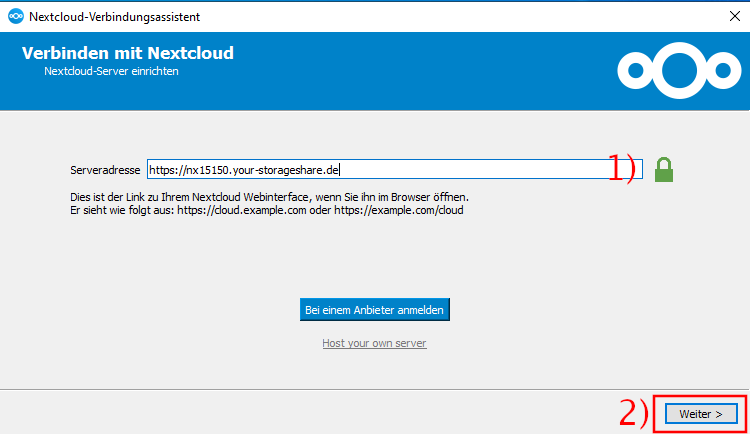
Es wird sich nun ein Browserfenster öffnen. Wenn das der Fall ist, klicke auf »Anmelden«.

Gib dein Benutzername (1) und Passwort (2) ein und fahre mit einem Klick auf »Anmelden« (3) fort.
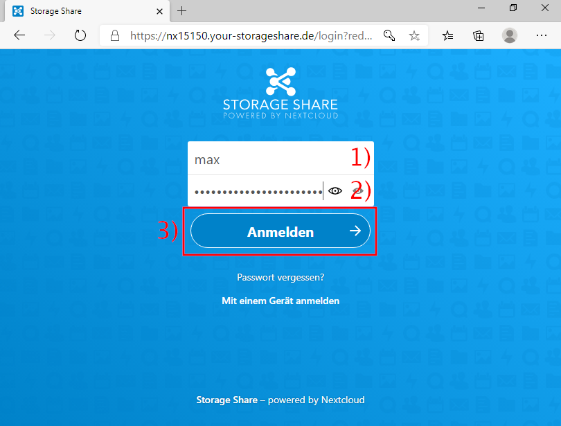
Erlaube dem Desktopprogramm den Zugriff mit einem Klick auf »Grant access«/»Zugriff erlauben«.

Das Browserfenster kann nun geschlossen werden.

Kehre nun zum Assistenten zurück und warte, bis du die unten abgebildete Ansicht sehen kannst. Deaktiviere die Option »Bestätigung erfragen, bevor externe Speicher synchronisiert werden«.

Klicke nun auf »Verbinden«.
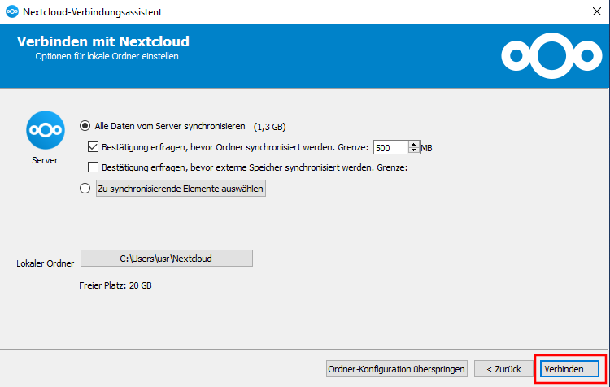
Das Einrichten ist nun abgeschlossen. Auf die Daten kann nun im Explorer zugegriffen werden. Nutze einfach das neue Bookmark »Nextcloud«.
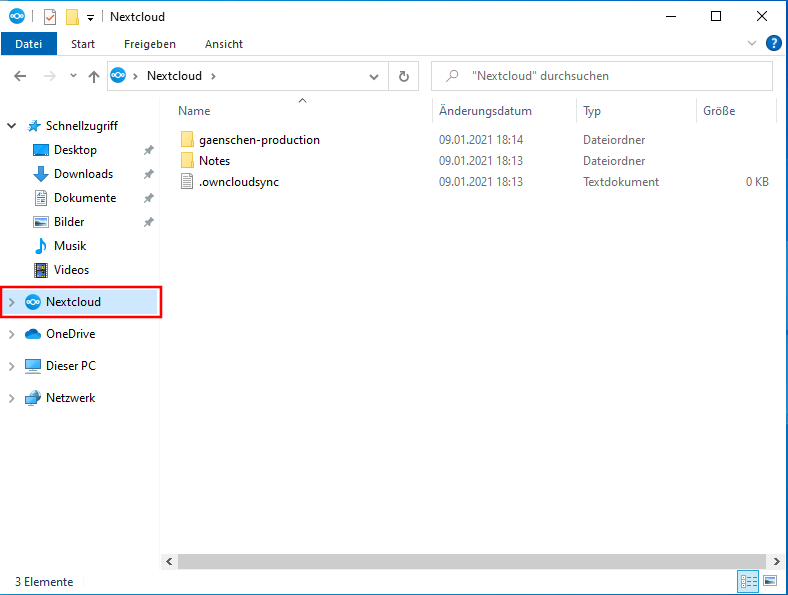
Windows 10 Kalender einrichten
Die Kalenderapplikation von Windows 10 kann mit Nextcloud verbunden werden.
Als erster Schritt öffne die Kalenderapplikation auf deinem System. Danach öffne die Einstellungen mit einem Klick auf das Zahnradsymbol links unten.
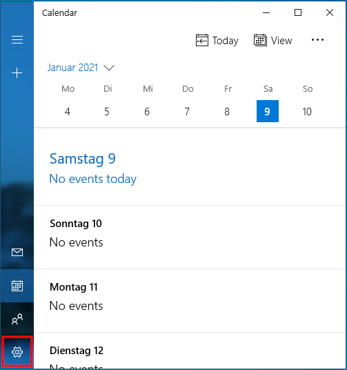
In den Einstellungen »Manage Accounts«/»Konten verwalten« auswählen.
In der Kontenübersicht mit einem Klick auf »Add account«/»Konto hinzufügen« ein neues Konto anlegen.

Im Dialog die Option »iCloud« auswählen.
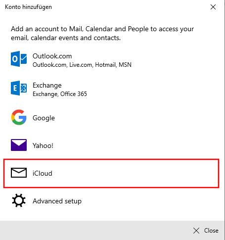
Im nächsten Dialog müssen die drei Textfelder ausgefüllt werden (1 bis 3). Die hierbei eingegebenen Daten müssen nicht korrekt sein. Es reicht also, irgendwelche Werte zu verwenden.
Nach einer kurzen Wartezeit ist das Konto angelegt und der Dialog kann geschlossen werden.

In der »Konten verwalten« Übersicht klicke auf das soeben angelegte Konto.
Im neu geöffneten Dialog auf »Synchronisationseinstellungen für Postfach ändern« klicken.
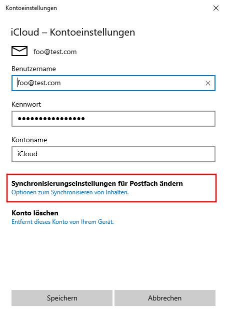
In dieser Ansicht nach unten scrollen und auf »Erweiterte Postfacheinstellungen« klicken.

Ein weiterer Dialog wird geöffnet. Scrolle runter, bis du die Textfelder »Kontaktserver (CardDAV)« und »Kalenderserver (CalDAV)« sehen kannst. In diese beide Felder muss die Kalendersync URL eingegeben werden. Wie diese gefunden werden kann, erklärt dieser Artikel. Danach die Eingabe mit einem Klick auf »Fertig« beenden.

Schliesse danach auch den Synchronisationseinstellung Dialog und gib nun deinen korrekten Benutzername (1), Kennwort (2) und Mailadresse (3, die Adresse, welche sich in deinem Nextcloud-Account findet). Schliesse deine Eingaben mit einem Klick auf »Speichern« ab.
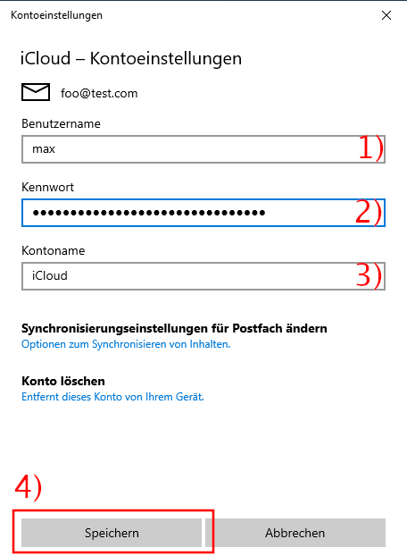
Du kannst nun den Kalender von Nextcloud auf Windows 10 nutzen.
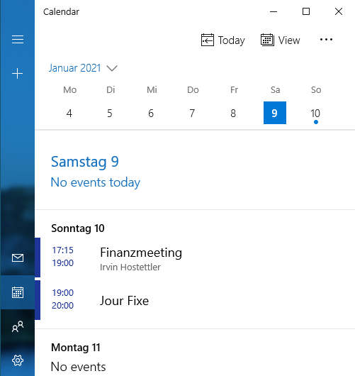
Outlook (Kontakte, Termine und Aufgaben) synchronisieren
Dieser Abschnitt beschäftigt sich mit dem Einrichten von Nextcloud mit Outlook. Hierfür ist ein Plugin erforderlich, dessen Installation und Konfiguration nun erklärt wird.
Plugin installieren
Für die Integration wird das Plugin Outlook CalDav Synchronizer benötigt. Gehe zunächst auf diese Seite und klicke auf »Download« um das Herunterladen zu starten.
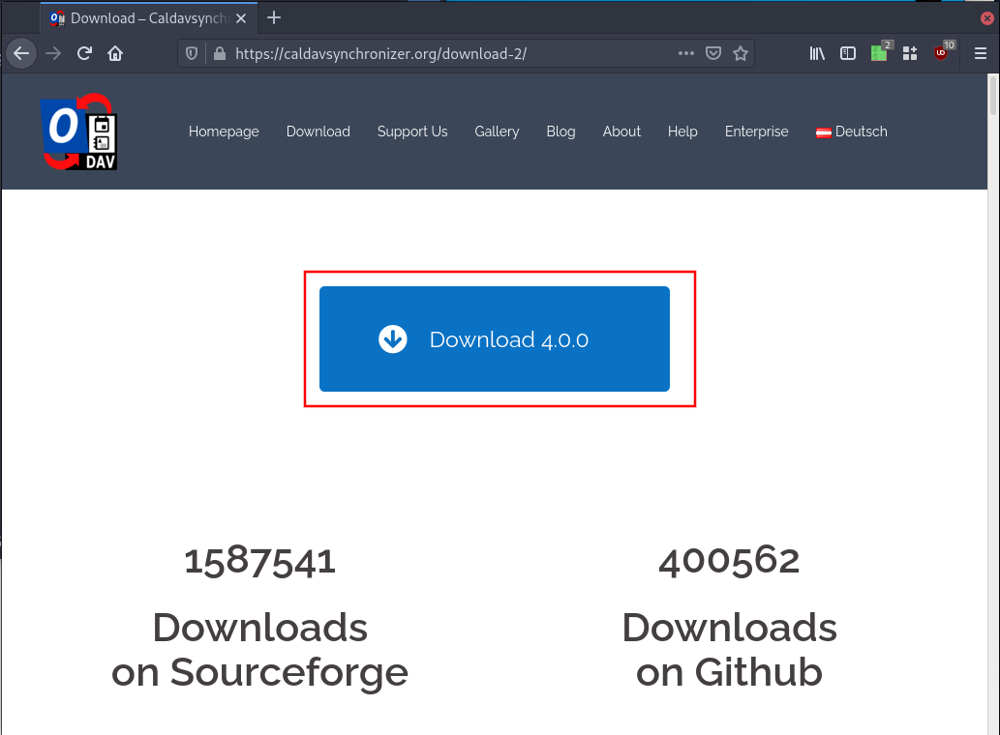
Wenn der Download abgeschlossen ist, klicke auf die heruntergeladene Datei um sie zu öffnen.

Ein Dateifenster öffne sich. Starte die Installation mit einem Doppelklick auf die Datei »CalDavSynchronizer Setup«.
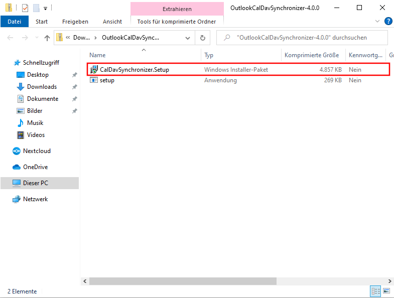
Klicke auf »Next«.
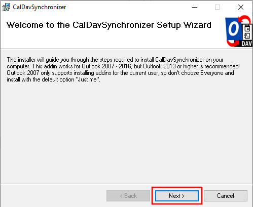
Klicke auf »Next«.

Erlaube das Durchführen der Installation mit einem Klick auf »Ja«.

Warte, bis die Installation abgeschlossen ist und beende sie mit einem Klick auf »Close«.

Konfiguration
Öffne nun Outlook. Achtung: Wenn Outlook während der Installation des CalDavSynchronizer offen war, musst du Outlook schliessen und nochmals öffnen.
Outlook verfügt nun über eine neue Registerkarte (»CalDav Synchronizer«). Öffne diese, indem du auf diese klickst.

Klicke nun auf »Synchronization Profiles«.

Lege ein neues Profil mit einem Klick auf das grüne Plus an.
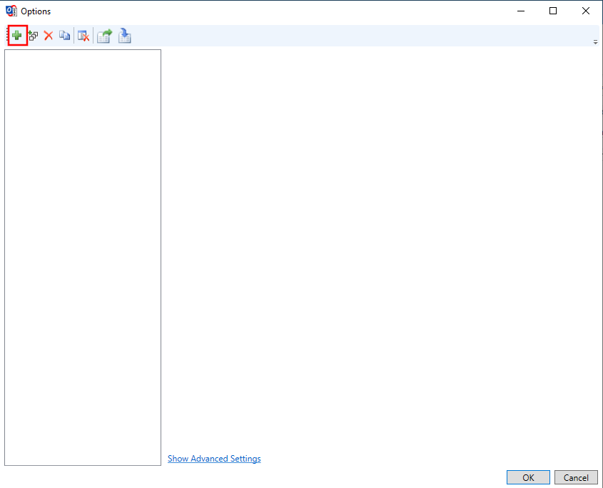
Wähle die »Generic CalDAV/CardDAV« Option aus (1) und bestätige diese Wahl mit einem Klick auf »Ok«.

Das Profil kann nun weiter editiert werden. Gibt zunächst (1) dem Profil einen Namen. Dieser hat keine weitere Funktion, hilft aber bei der Unterscheidung mehrerer Profile. Es empfiehlt sich einfach den Namen des Kontaktbuches oder Kalenders zu verwenden, welcher synchronisiert werden soll.
Aufgrund des Aufbaus von Outlook, muss jedes Kontaktbuch/Kalender/Aufgabenliste separat in einem eigenen Profil angelegt werden. Der Abschnitt »Konfiguration« muss also für alle Kontaktbücher/Kalender/Aufgabenlisten einzeln wiederholt werden. In Folge wird das Vorgehen anhand eines Kalenders gezeigt. Die Schritte für Kontaktbücher oder Aufgabenlisten sind aber die selben, auf Unterschiede wird hingewiesen werden.
Klicke auf den »...« Button.

Klicke auf »Neu«.

Es muss nun ein neuer Ordner für den Kalender/Kontaktbuch/Aufgabenliste (ab jetzt »Ressource« genannt) angelegt werden. Vergebe hierzu zunächst (1) einen Namen. Dieser kann frei gewählt werden, am besten benennst du ihn so, wie die Ressource in der Nextcloud heisst. In einem zweiten Schritt (2) musst du den Elemententyp auswählen. Dieser entspricht der Ressource. In anderen Worten: Wenn du einen Kalender synchronisieren möchtest, brauchst du einen »Kalender« Typ etc.
Abschliessend (3) musst du den Speicherort wählen. Aktiviere hierzu den passenden Ort. Wenn du eine Aufgabenliste synchronisieren möchtest wähle »Aufgaben« (A), für Kalender »Kalender« (B) und für Kontakte »Kontakte« (C). Schliesse deine Eingaben mit einem Klick auf »Ok« (4) ab.

Wähle den soeben angelegten Kalender/Kontaktbuch/Aufgabenliste aus (1) und bestätige deine Wahl mit »Ok« (2).

Aktiviere zunächst (1) die Option »Synchronize items immediately after change« und gib danach die Kalender-URL ein (2), wie du diese herausfindest erfährst du hier. Weiter gibst du dein Benutzername (3) sowie Passwort (4) ein. Abschliessend gib deine Mailadresse, welche auch von deinem Nextcloud-Account verwendet wird ein (5).
Klicke nun auf »Test or discover settings«.

Es öffnet sich nun ein weiterer Dialog, indem du aus den vorhandenen Kalender/Kontaktbücher/Aufgabenlisten auswählen kannst. Klicke auf die gewünschte Ressource (1) und bestätige die Auswahl mit »Ok« (2).
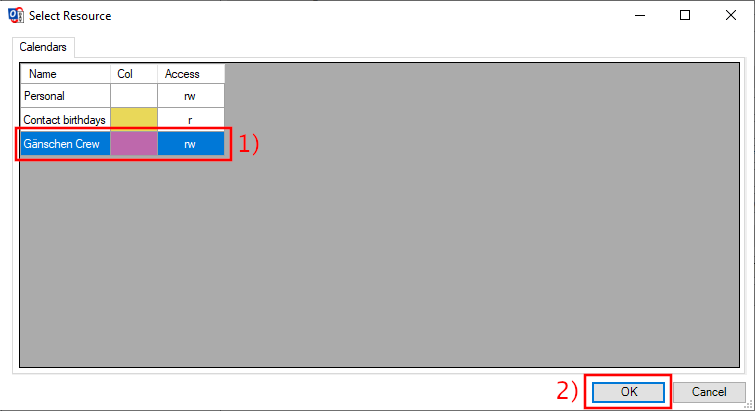
Die Konfiguration ist nun abgeschlossen. Mit einem Klick auf »Ok« werden deine Einstellungen gespeichert und du kannst die neue Ressource nutzen.

Hinweis: Vergiss nicht, für jeden weiteren Kalender/Kontaktbuch/Aufgabenliste ein neues Profil und einen neuen Ordner anzulegen.
Allgemein
Dieses Kapitel umfasst weitere Themen der Integration von Nextcloud.
URL für Kalender- und Kontaktsynchronisation
Gewisse Applikationen (z.B. die Kalenderapplikationen von Mac und Windows) benötigen eine spezielle URL, um auf die Daten zugreifen zu können. Da das Vorgehen für alle Systeme das selbe ist, wird dies hier für alle Systeme gemeinsam beschrieben. Diese Anleitung ist für dich nur von Interesse wenn du von einer anderen Dokumentation explizit hierauf verwiesen worden bist.
TL;DR. Die URL kann auch von deinem Benutzername (der Name mit welchem du dich auf Nextcloud einloggst) abgeleitet werden. Nimm https://nx15150.your-storageshare.de/remote.php/dav/principals/users/BENUTZERNAME/ und ersetzte BENUTZERNAME mit deinem Nutzername (Beispiel, wenn dein Nutzername max ist, würde die URL https://nx15150.your-storageshare.de/remote.php/dav/principals/users/max/ sein). Wenn dir das zu kompliziert ist, kannst du auch der weiteren Anleitung folgen.
Öffne zunächst die Cloud in deinem Webbrowser. Danach wechsle zur Kalenderansicht.
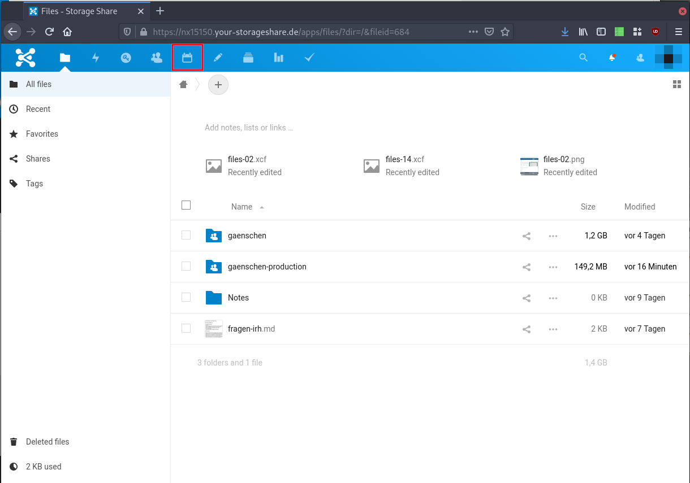
Klicke auf »Settings & Import«/»Einstellungen & Import«.
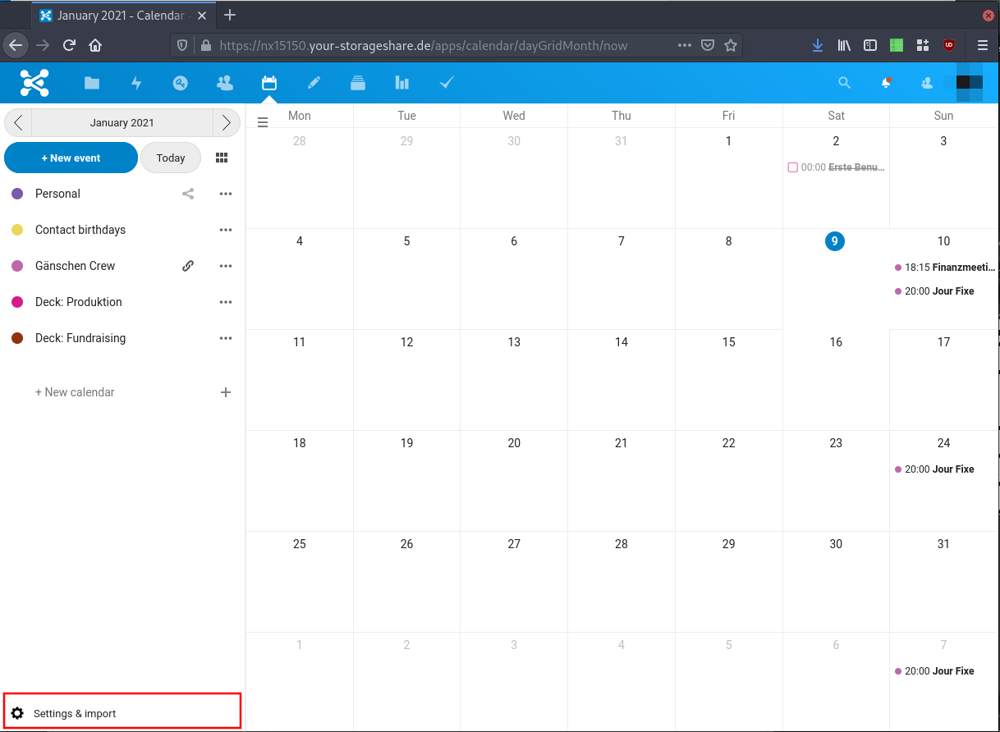
Scrolle nun nach unten, bis du »Copy iOS/macOS CalDAV address« siehst und klicke darauf. Die URL wurde nun in die Zwischenablage kopiert und kann verwendet werden.
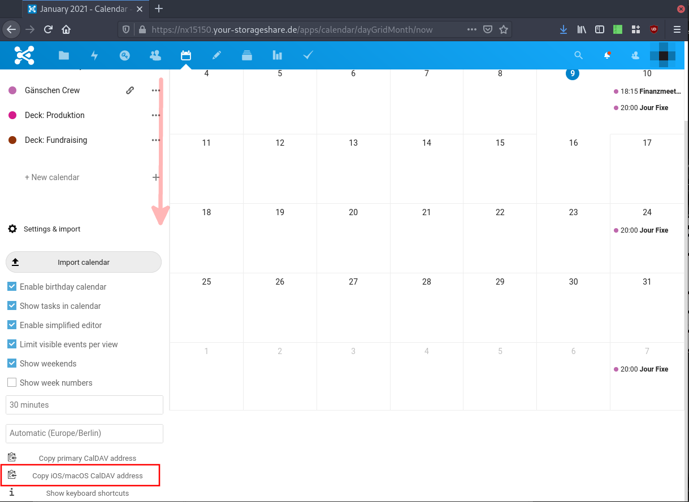
Nextcloud Kalender in Google Kalender anzeigen (abonnieren)
Es ist möglich, einzelne Nextcloud Kalender in Google Kalender zu abonnieren. Es ist dann also möglich, den Inhalt des Kalenders in Google zu sehen aber nicht zu bearbeiten.
Öffne zunächst den Online Kalender der Nextcloud im Browser. Wähle den Kalender aus, welchen du in Google einbinden willst und klicke auf das Share Symbol (Kette) neben diesem.
Ein Menü klappt sich auf, klicke nun auf den Button mit den drei Punkten.

Klicke nun auf »Copy subscription link«. Die URL für den Kalender befindet sich nun in deiner Zwichenablage.

Öffne nun Google Kalender und klicke auf das Plus neben »Weitere Kalender«.

In dem sich nun öffnenden Menü klicke auf »Per URL«.

Im Textfeld »URL des Kalenders« fügst du die URL aus der Zwischenablage ein (1). Danach kannst du die Eingabe mit einem Klick auf »Kalender hinzufügen« abschließen.
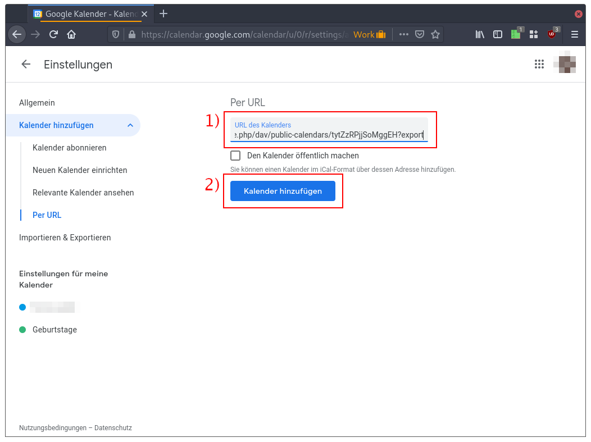
Der Inhalt des Kalenders wird nun in Google Kalender angezeigt.